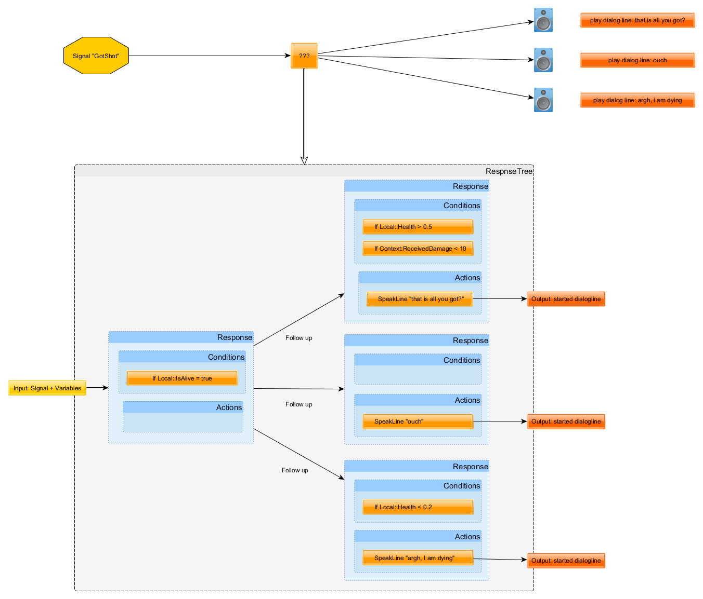
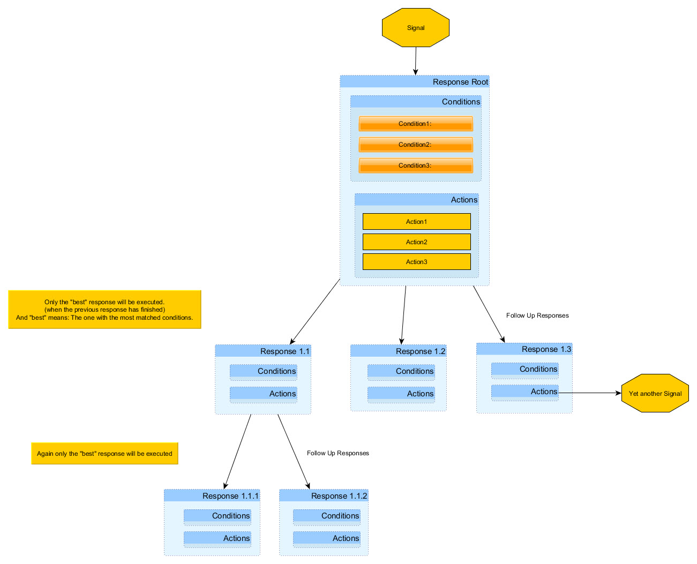

Overview
Dynamic Response System (DRS) introduces a new way to implement dialogues in a game. In the previous dialog system, content integrators could start specific dialogues at specific locations in the game. This made it hard for the narrative designers to add a new dialog or change the existing ones as they always required the intervention of a content integrator. Generally, old dialog system caused unintended results to occur; contrary to the DRS, it was not able to organize dialog lines well enough to prevent the possible problems like overlapping or unintended delays. A content integrator had to create multiple logic flows and different systems to ensure that dialog started or stopped at the right time. This included situations like checking if the person is already speaking a more important line, if the person is alive or if the line was already played before. This workflow made an already complicated system more complex by having the content integrator to deal with multiple dialog logic flows.
The DRS on the other hand, follows a different workflow. It decouples the dialog-feedback relationship and the game logic. The System achieves this by adding an abstract layer between something is happening and a running dialog feedback. Therefore, the DRS simply splits the responsibilities between the content integrator and the narrative designer. This ensures that a content integrator is now only responsible for providing information about the state of the game-world and the events that are happening in it, while the narrative designer is responsible for converting those inputs into dialog outputs.
This approach, in comparison to the old system, requires the content integrator to no longer start dialog lines; they rather inform the DRS that an event has been initiated and that the event can be linked to a dialog. This might sound like an additional step to just get a dialog line to be played, but it has many positive effects, particularly when you have more than just trivial dialog scenarios. Also, all logic related to overlapping dialogues, timeouts for dialog lines, variations, which based on many things in the game world, are now dealt with centrally in the DRS and not in various different systems.
Important Dynamic Response System Concepts
There are some central concepts used in the DRS that you should fully understand before using it.
| Concept | Description |
|---|---|
| Signals | These are sent by the game logic, and by the DRS itself, whenever something potentially interesting is happening such as signal_enemy_spotted, signal_received_damage,or signal_area6_entered. Just because a signal is sent does not mean a dialog will be played. This a decision for the narrative designers who need to decide if and how any dialog will react to the game-events. |
| Variables | A name and a value that describes the state of the game. It can be created or updated by the game logic and by the DRS. These variables then can be used in conditions to find the best fitting dialog to an event. Currently, it supports the Integer, Float, Bool values and Strings; note that the actual string is not stored internally, but is stored as a hashed version of it. |
| VariableCollections | A named group of related variables. Every variable is part of a collection, so within a collection, each variable-name needs to be unique. You can distinguish between three different types of collections:
|
| Responses | They are always connected to a specific signal, so when a corresponding signal is sent by a game logic or the DRS, the response is executed. Responses can contain several conditions and actions where different conditions will result in different actions being executed. |
| Conditions | The output of a response can/will depend on different conditions. This is the dynamic part in DRS and is based on the current state of the world, provided through DRS variables, and where the output of a response may be different. For example, the dialog output for the signal signal_received_damage might depend on the health of the receiving actor, the amount of damage taken and/or the source of the damage. A game can also implement custom conditions, so for example if you are creating a game involving a math-professor you, might need a condition like isPrimeNumber. |
| Actions | A response might contain several actions. The most common action is probably the speakLine action, which executes a line of dialog. Other default actions are ChangeVariable (for example to keep track of how often a line has already been played), PlaySound, SendSignal orCancelResponse. Games can also implement custom actions; for example, you might want to trigger AI Actions based on a dialog. |
| Actors | Every object that is part of the DRS. This means every object that sends signals is a DRS actor; every object that has local variables is an actor and every object that is used in an action is an actor. Actors are normally referenced by their name. Responses can also change the active actor in order to let another object react to a signal. For example, narrative designers might decide to let the player-companion say the line "What do you see?" when the player entity received an enemy-spotted signal. |
Flow of a Game Event
The following example shows how the game event, player was shot by someone is converted into actual dialog output. The ??? block is the part where the DRS comes into play:

Flow diagram for a game event
Example
The game logic can decide to always send a signal called sg_door_opened when the player opens a door. It's then up to the narrative designer as to what they do with this signal; they might just ignore it or they might add a response to the signal that starts a generic dialog such as "Look at me, I am opening a door."
The narrative designer can also decide that no dialog will be played when opening a door, but they may still create a response for the signal which, for example, just increments a variable that is created by themselves in the local variable collection of the door-opener-actor named opened_door_counter. They may then use this variable later on in the response, for instance to the signal sg_princess_freed, by having a specialized dialog-line such as "I had to open more than 70 doors to get to you, but boy it was worth it.”
This shows how narrative designers can create an interesting and more specialized, therefore better fitting dialog flow when they get enough input signals/variables to work with. If the sg_door_opened signal has a context variable containing the name of the opened door, then the narrative designer might also use this additional information to trigger another dialog for specific doors only.
Dynamic Response System Steps
The diagram below shows the flow of the same signal as above. This time though, in a vertical way and is based on the outcome of the conditions when different paths are chosen.

Flow signal in a vertical path
Based on the diagram above, it is possible to say that when the DRS receives a signal, it;
- Finds the linked response for the signal;
Branch: Outcome: No response for this signal → Done - Checks if all conditions for the response are met;
Branch: Outcome: condition not met → Done - Executes all actions in that response simultaneously, unless the DRS user specified some InitialDelays for one of the actions;
- Wait for all actions to finish;
Find the best Follow-up Response;
Branch: Outcome: None found → Done, otherwise continue with Step 3.Depending on the depth of the tree, the execution of the whole response tree might result in either one of the following results:
- A lot of outputs: Spoken lines, changed variables, etc.
- No output at all: If the conditions are not matched, or there is simply no response linked to the signal.
It is also worth mentioning that a response can send another signal by itself. This may start another response-tree in parallel and can be useful to split up response trees, reuse branches or to realize looping.
DRS knows what the best response is by simply assuming that the most specific response is the one that best fits the current situation. So the DRS will pick the response with the most conditions; which of course all need to be met, otherwise the response is not taken into consideration. This approach does make sense when for example you have to choose between the generic lines "There! An enemy" (a response with no conditions) or a very specific line such as "Oh no, an orc with a bow and just 15 seconds after we defeated this big Manticore!" (a response with many conditions). Clearly the second option here is the best fit for the situation. Each response can have any number of follow-up responses, but only one is executed; in other words, the one with the most matched conditions.